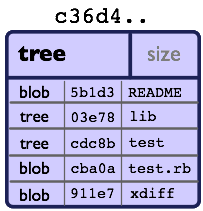

About us
Working Together @MiPih as ToolSmiths |
|

Fast, Git ?
- Performances, the origins
If it takes half a minute to apply a patch […] then a series of 250 emails […] takes two hours.
- Content oriented
- Storing snapshots, not deltas

The Index

- add
-
adds to the index (-p lets you choose the parts of your file you actually want to add)
- index
-
staging area (a sweet place to lovingly craft your commits)
- commit
-
Captures the state of the index.
Quiz: git add
echo "dingdingdingbabababaaaaa" >> theFile # (1)
git add theFile
echo "blah" > theFile # (2)
git commit -m "done"Right answer: (1) |
|
(note: difference with svn ⇒ (2)) |
Git Data Model: The 4 Object Types
- blob
-
File content, identified by a hash

- tree
-
List of pointers to blob, or tree, identified by a hash

- commit
-
References the (root) tree + metadata, 0 to n parent commits, identified by a hash

Identified by a SHA-1 hash :
|
Possibly: Author ≠ Committer |
DAG : Directed Acyclic Graph |

|
- tag
-
Name associated with a commit (+ potential metadata)

Git Data Model : wrap up

Step back
Quiz: what does this?
$ git init pouet && cd pouet
$ git commit -m "initial commit" --allow-empty
$ echo abc > .git/refs/heads/pafCreates a branch! That’s right!
$ git init pouet && cd pouet
$ git commit -m "initial commit" --allow-empty
$ echo abc > .git/refs/heads/paf
$ git branch
* master
paf
So… What are branches again?
Resetting
git reset [--soft|--mixed|--hard] <TARGET>
- Works on the current branch pointer.
|
|
Example:
git reset HEAD~- Latest commit becomes the previous one (kind of: HEAD=HEAD~).
- Index is empty
- Working copy is intact
Example:
git reset --hard HEAD~2- HEAD=HEAD~2
- Index is empty
- Working copy at the HEAD~2 state (any uncommitted change is lost)
Rebase
(on feature) git rebase master

Rewinding:

Rewinding:

Replaying:

Replayed:

Rebased:

Merge
(on master) git merge feature
After (merge commit created):

Tips & tricks
Git reflog can save your a$$: keeps track of everywhere you went by

Example:
$ git reflog
f7d3b1 HEAD@{0}: commit (amend): Added reset + compulsory lolcat
440a3bf HEAD@{1}: commit (amend): Added reset + details
c830885 HEAD@{2}: commit: Ajout reset
36b4dce HEAD@{3}: commit: Passe sur les ajustements: ff, intro...
5ef0aa8 HEAD@{4}: commit (amend): On sa mis dacor
8e51635 HEAD@{5}: rebase -i (finish): returning to refs/heads/master
8e51635 HEAD@{6}: rebase -i (fixup): On s'a mis dacor
b6d8c99 HEAD@{7}: rebase -i (pick): On s'a mis dacorWhat if you know you introduced a bug between one commit and another?
But there’s 1000 commits between them?
How to find out the offending one?
References & useful links
- http://ndpsoftware.com/git-cheatsheet.html
- https://training.github.com/
- Great tool for learning & understanding Git: http://pcottle.github.io/learnGitBranching/
- Repository layout
- Special thanks to Scott Chacon for many illustrations reused here
- Comprehensive article from Alex Blewitt about the different ways to embed JGit

/